File: 000540.gt.txt (if the image is defective, simply delete all Arabic text and the line will be excluded)
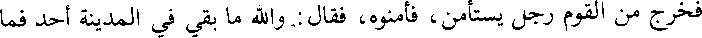
فخرج من القوم رجل يستأمن، فأمنوه، فقال : والله ما بقي في المدينة أحد فما
File: 000541.gt.txt (if the image is defective, simply delete all Arabic text and the line will be excluded)
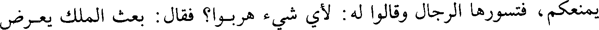
يمنعكم، فتسورها الرجال وقالوا له : لأي شيء هربوا؟ فقال : بعث الملك يعرض
File: 000542.gt.txt (if the image is defective, simply delete all Arabic text and the line will be excluded)
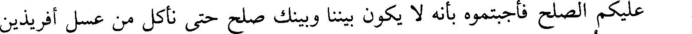
عليكم الصلح فأجبتموه بأنه لا يكون بيننا وبينك صلح حتى نأكل من عسل أفريذين
File: 000543.gt.txt (if the image is defective, simply delete all Arabic text and the line will be excluded)
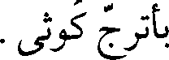
بأترج كوثى.
File: 000544.gt.txt (if the image is defective, simply delete all Arabic text and the line will be excluded)
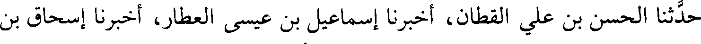
حدثنا الحسن بن علي القطان، أخبرنا إسماعيل بن عيسى العطار، أخبرنا إسحاق بن
File: 000545.gt.txt (if the image is defective, simply delete all Arabic text and the line will be excluded)
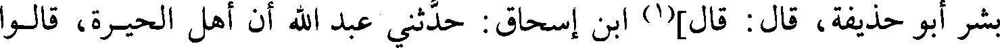
بشر أبو حذيفة، قال : قال](1) ابن إسحاق : حدثني عبد الله أن أهل الحيرة، قالوا
File: 000546.gt.txt (if the image is defective, simply delete all Arabic text and the line will be excluded)
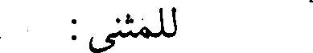
للمثنى :
File: 000547.gt.txt (if the image is defective, simply delete all Arabic text and the line will be excluded)
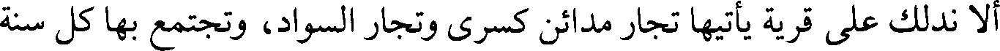
ألا ندلك على قرية يأتيها تجار مدائن كسرى وتجار السواد، وتجتمع بها كل سنة
File: 000548.gt.txt (if the image is defective, simply delete all Arabic text and the line will be excluded)
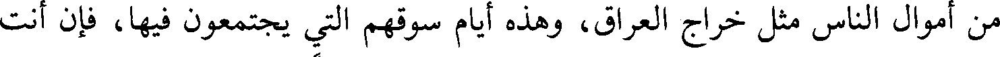
من أموال الناس مثل خراج العراق، وهذه أيام سوقهم التي يجتمعون فيها، فإن أنت
File: 000549.gt.txt (if the image is defective, simply delete all Arabic text and the line will be excluded)
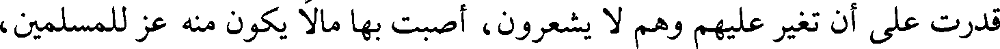
قدرت على أن تغير عليهم وهم لا يشعرون، أصبت بها مالا يكون منه عز للمسلمين،
File: 000550.gt.txt (if the image is defective, simply delete all Arabic text and the line will be excluded)
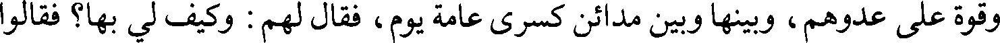
وقوة على عدوهم، وبينها وبين مدائن كسرى عامة يوم، فقال لهم : وكيف لي بها؟ فقالوا
File: 000551.gt.txt (if the image is defective, simply delete all Arabic text and the line will be excluded)
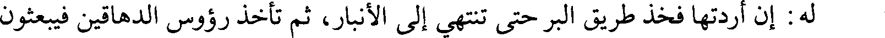
له: إن أردتها فخذ طريق البر حتى تنتهي إلى الأنبار، ثم تأخذ رؤوس الدهاقين فيبعثون
File: 000552.gt.txt (if the image is defective, simply delete all Arabic text and the line will be excluded)
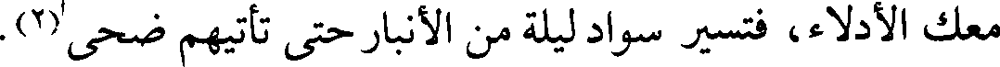
معك الأدلاء، فتسير سواد ليلة من الأنبار حتى تأتيهم ضحى(2).
File: 000553.gt.txt (if the image is defective, simply delete all Arabic text and the line will be excluded)
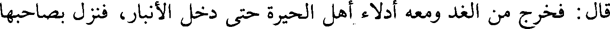
قال: فخرج من الغد ومعه أدلاء أهل الحيرة حتى دخل الأنبار، فنزل بصاحبها
File: 000554.gt.txt (if the image is defective, simply delete all Arabic text and the line will be excluded)
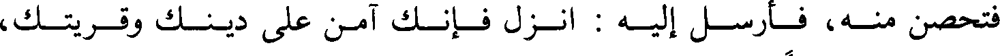
فتحصن منه، فأرسل إليه : انزل فإنك آمن على دينك وقريتك،
File: 000555.gt.txt (if the image is defective, simply delete all Arabic text and the line will be excluded)
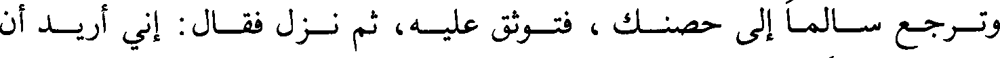
وترجع سالما إلى حصنك ، فتوثق عليه، ثم نزل فقال : إني أريد أن
File: 000556.gt.txt (if the image is defective, simply delete all Arabic text and the line will be excluded)
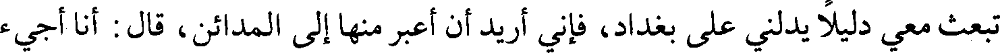
تبعث معي دليلا يدلني على بغداد، فإني أريد أن أعبر منها إلى المدائن، قال : أنا أجيء
File: 000557.gt.txt (if the image is defective, simply delete all Arabic text and the line will be excluded)
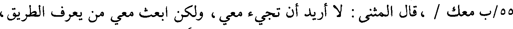
55/ب معك / ،قال المثنى : لا أريد أن تجيء معي، ولكن ابعث معي من يعرف الطريق،
File: 000558.gt.txt (if the image is defective, simply delete all Arabic text and the line will be excluded)
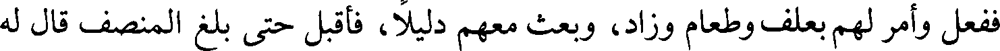
ففعل وأمر لهم بعلف وطعام وزاد، وبعث معهم دليلا، فأقبل حتى بلغ المنصف قال له
File: 000559.gt.txt (if the image is defective, simply delete all Arabic text and the line will be excluded)
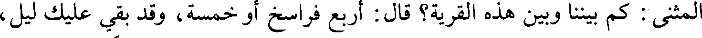
المثنى: كم بيننا وبين هذه القرية؟ قال : أربع فراسخ أو خمسة، وقد بقي عليك ليل،
File: 000560.gt.txt (if the image is defective, simply delete all Arabic text and the line will be excluded)
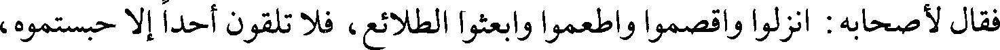
فقال لأصحابه : انزلوا واقصموا واطعموا وابعثوا الطلائع، فلا تلقون أحدا إلا حبستموه،
File: 000561.gt.txt (if the image is defective, simply delete all Arabic text and the line will be excluded)
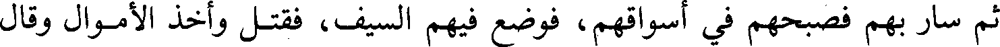
ثم سار بهم فصبحهم في أسواقهم، فوضع فيهم السيف، فقتل وأخذ الأموال وقال
File: 000562.gt.txt (if the image is defective, simply delete all Arabic text and the line will be excluded)
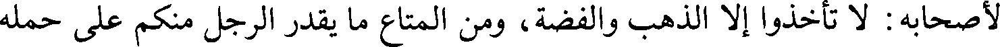
لأصحابه : لا تأخذوا إلا الذهب والفضة، ومن المتاع ما يقدر الرجل منكم على حمله
File: 000563.gt.txt (if the image is defective, simply delete all Arabic text and the line will be excluded)
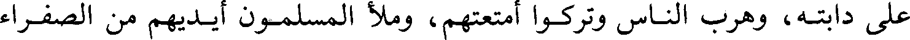
على دابته، وهرب الناس وتركوا أمتعتهم، وملأ المسلمون أيديهم من الصفراء
File: 000564.gt.txt (if the image is defective, simply delete all Arabic text and the line will be excluded)
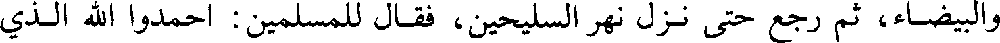
والبيضاء، ثم رجع حتى نزل نهر السليحين، فقال للمسلمين : احمدوا الله الذي
File: 000565.gt.txt (if the image is defective, simply delete all Arabic text and the line will be excluded)
209
File: 000566.gt.txt (if the image is defective, simply delete all Arabic text and the line will be excluded)
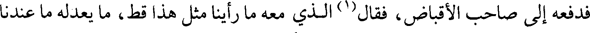
فدفعه إلى صاحب الأقباض، فقال(1) الذي معه ما رأينا مثل هذا قط، ما يعدله ما عندنا
File: 000567.gt.txt (if the image is defective, simply delete all Arabic text and the line will be excluded)
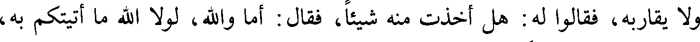
ولا يقاربه، فقالوا له : هل أخذت منه شيئا، فقال : أما والله، لولا الله ما أتيتكم به،
File: 000568.gt.txt (if the image is defective, simply delete all Arabic text and the line will be excluded)
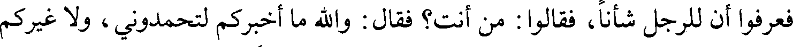
فعرفوا أن للرجل شأنا، فقالوا : من أنت؟ فقال : والله ما أخبركم لتحمدوني، ولا غيركم
File: 000569.gt.txt (if the image is defective, simply delete all Arabic text and the line will be excluded)
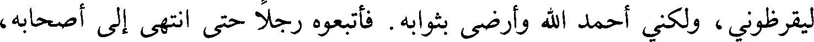
ليقرظوني، ولكني أحمد الله وأرضى بثوابه . فأتبعوه رجلا حتى انتهى إلى أصحابه،
To Save: `Ctrl+s`, make sure to choose `Webpage, complete`!